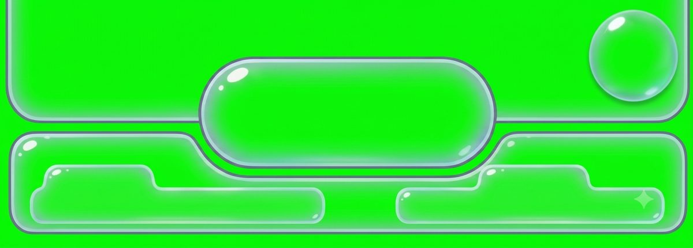
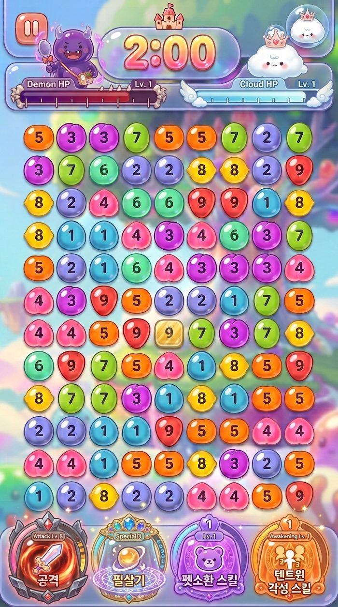
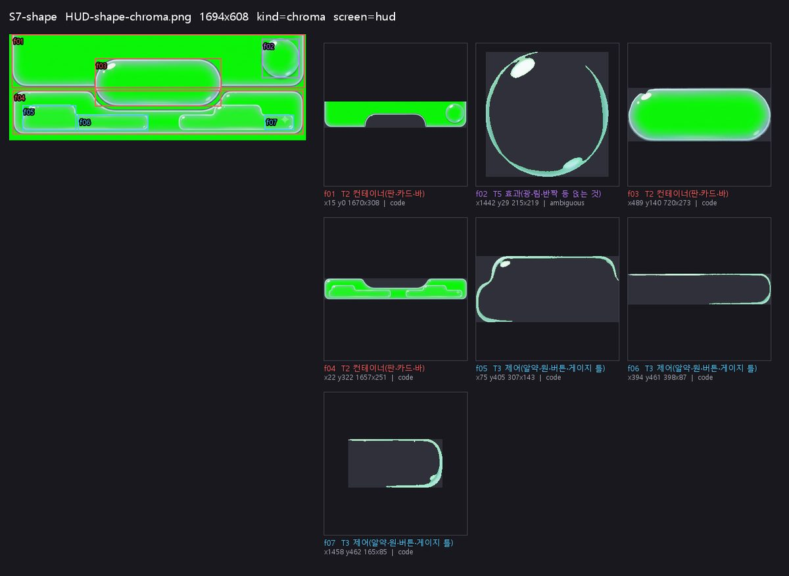
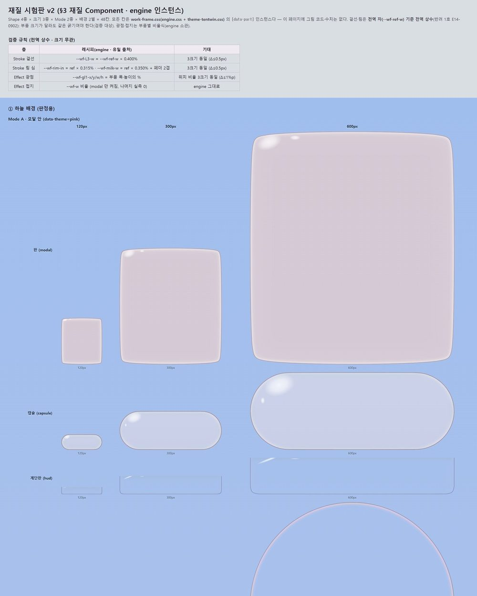
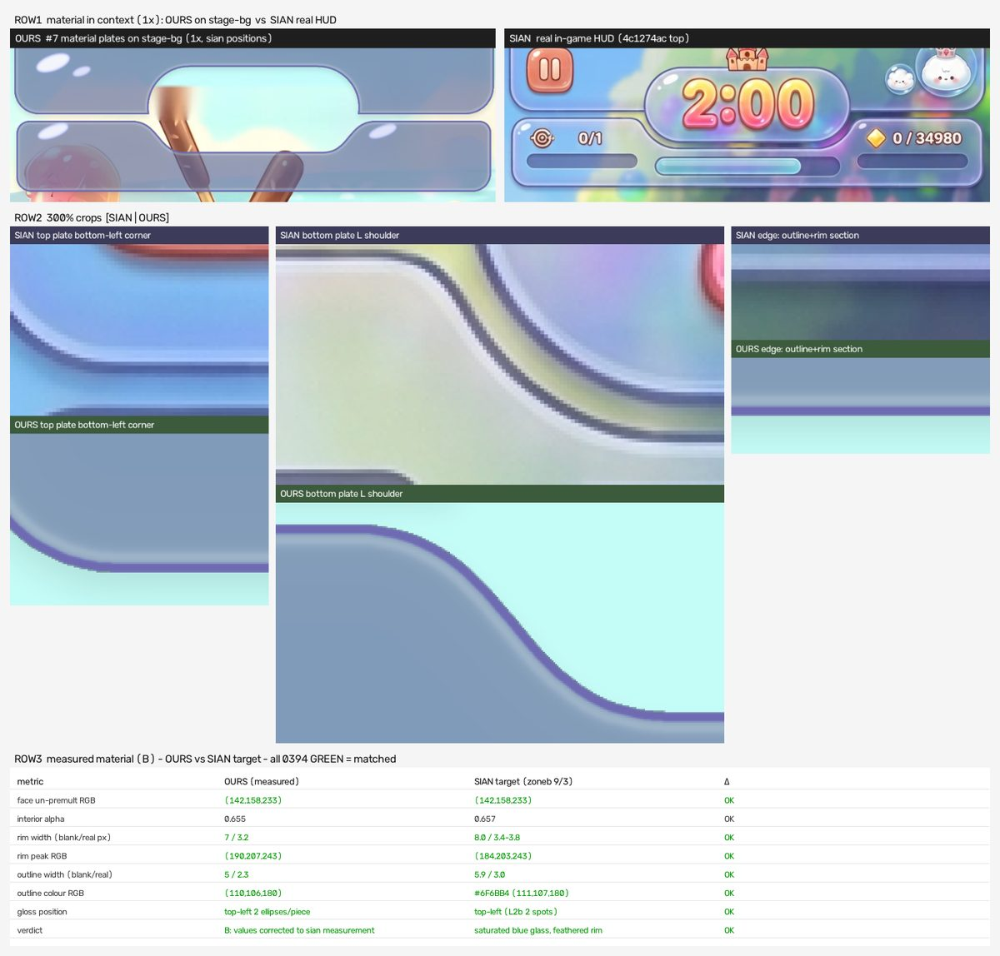
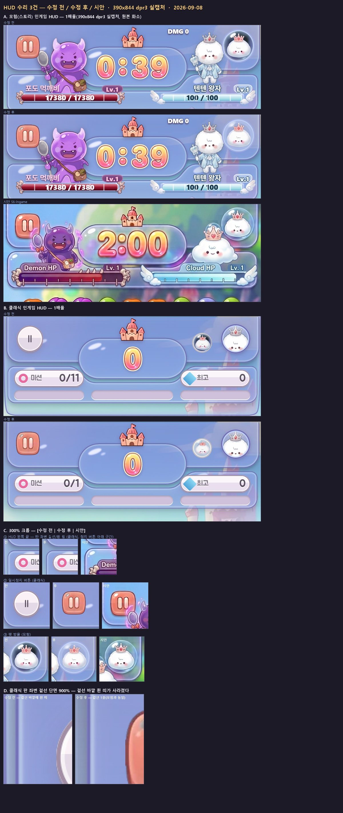
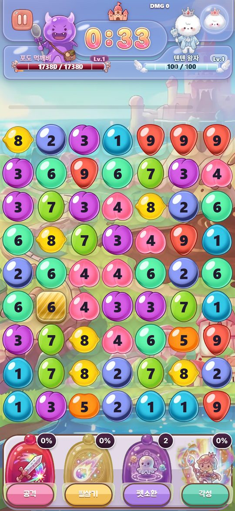
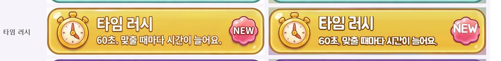
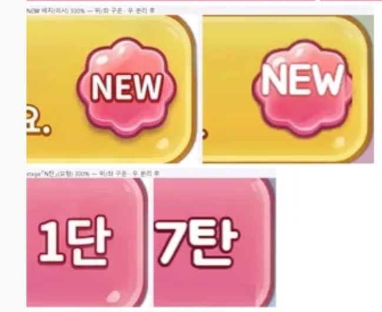
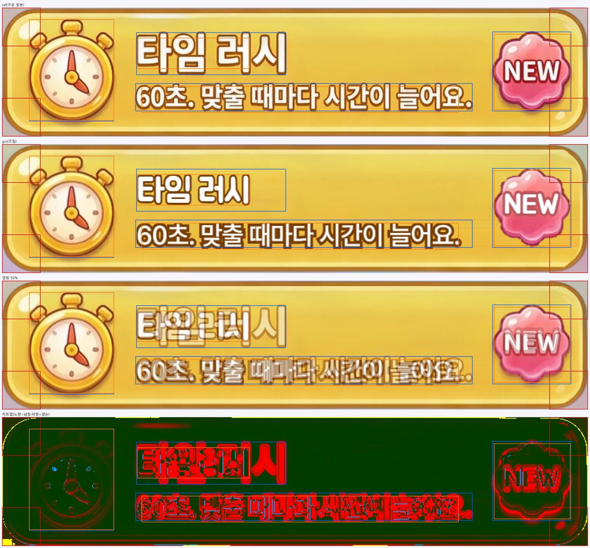

스텝 — 에셋 하나가 지나가는 길
초점주어진 시안 한 장이 접수 → 분해 → 판정 → 재질 → 제작 → 배선 → 관문 → 승인·푸시로 어떻게 넘어가는가 · 두 번째 예시는 같은 길에서 어디가 무너졌고 기준이 어떻게 생겼는가S2~S7 · A0~A12
🟢 통과·푸시됨
🔴 반려·실패
🟡 진행 중·판정 대기
S# = 규격 단계 · A# = 스킬 단계
칸 = 입력 · 한 일 · 산출 · 관문 · 도구
예시 1 · HUD 위 판 T2 t2-plate-hud-top-plain-lite 🟢 푸시됨
1S2 · A0 접수시안 두 장을 등재하고 크로마를 뜯는다
입력

tentwin/assets/sian-src/HUD-shape-chroma.png (S7-shape, 1694×608)

tentwin/assets/sian-src/S6-ingame.png (S6, 768×1376)
한 일
사용자가 "시안"이라 부른 것만 S# 등재. ASCII 사본을 만들고, 이미 뜯은 적이 있는지(md5·pHash) 먼저 검사한 뒤 초록 배경을 키로 잡아 도형을 분리한다.
산출
tentwin/ref-v2/intake/S7-shape/SHEET.png · frames.json (프레임 후보 7 · T2 3 · T3 3 · T5 1)
관문
재추적 검사: 동일 1건 · 유사 10건 → S7-shape 재사용 f01 T2 x15 y0 1670×308 ← 위 판 Δ%W 최대 0.45 (기준 2%) PASS
도구
python tools/intake/sian-intake.py tentwin/assets/sian-src/HUD-shape-chroma.png --kind chroma --screen hud
2S3 · A1~A3 형태·레이아웃·판정계층을 정하고 코드인지 자산인지 가른다
입력

tentwin/ref-v2/intake/S7-shape/SHEET.png
한 일
위 판은 T2 컨테이너. 겉선·림·광점이 손질감으로 구워져 있어 asset(구운 층 1~4). 값이 들어갈 자리는 슬롯 3개로 비워 둔다.
산출 · 매니페스트 원문
- id
- t2-plate-hud-top-plain-lite
- tier
- T2 · kind frame · frames 1
- impl
- asset · baked_layers [1,2,3,4]
- shape
- plate-wide
- slots
- hp-fill · hp-ticks · name-tab
- bbox
- 1694×608 → x0 y0 w1694 h327 (100% × 19.3%)
- fill
- $mode.B.face.hud · $mode.B.alpha.hud
- source
- S7 glass-hud-plate-st.webp 크로마 분해
tentwin/ref-v2/manifest/frames.tentwin.json
관문
jsonschema: 통과 (0 오류) 원시값 직접 참조 위반 0 · dangling 0 프레임 66 · EXIT=0
도구
python tools/measure/manifest-validate.py
3S4 · A4~A5 값·효과재질은 틀 B 한 벌에서만 온다
입력 · Mode B 슬롯 6
- face
- #96A7F6 (150,167,246)
- alpha
- .550
- rim
- #C2D6FF (194,214,255)
- outline
- #6F6BB4
- gloss
- .770
- contact
- .200
tentwin/ref-v2/manifest/modes.tentwin.json · theme-tentwin.css --mode-b-*
한 일
부품이 값을 직접 갖지 않는다. 사용자가 확정한 HUD 값을 틀 B로 올리고, 모든 하늘색 부품은 그 여섯 슬롯을 참조한다.
산출 · 라이브 인스턴스
engine.css + theme-tentwin.css · [data-part=hud][data-theme=sky] (그림 아님)

tentwin/ref-v2/material-test.html → MATERIAL-TEST.png (v2, 48칸 전부 인스턴스)
관문
engine.css 원시값 0 PASS (hex 0 · color-fn 0 · opacity 0) 재질 시험판 v2: 겉선 전역 상수 16/16 PASS Mode A 픽셀 변화 0 · 사용자 승인 대기
도구
python tools/measure/css-primitives.py tentwin/ref-v2/engine.css tentwin/ref-v2/theme-tentwin.css
4S4 · A6~A9 제작·파일화·등록한 파일에 프레임 하나
입력

tentwin/ref-v2/hud-shape/KIT-HUD-plates-material-B.png
한 일
크로마 7조각을 1파일 1Frame으로 나눈다 — 위 판 · 캡슐 · 캡슐 마스크 · 아래 판 · 홈 좌·우. 판에는 글자·게이지를 굽지 않는다. 배포본은 같은 stem의 webp.
산출 · 프레임 파일 원본

tentwin/ref-v2/hud-shape/hud-plate-top-plain-lite.png (28KB) → site/catalog/hud-plate-top.webp (16KB)
관문
frames 게이트 — 한 파일 = 한 프레임 항목 26 · FAIL 0 · WARN 0 · 미등록 webp 0 frames PASS
도구
python tools/measure/components-gate.py frames --manifest tentwin/ref-v2/hud-shape/hud-components.json --catalog site/catalog
5S5 · A10 배선교체점은 정확히 하나
입력 · 교체점
- hook
- tentwin/ref-v2/hud-shape/hud-plate-top-plain-lite.png
- 배포 대응물
- site/catalog/hud-plate-top.webp
- consumers
- site/tentwin.html (#topbar) · board/screen-hud.html
한 일
옛 합성 자산(top-cap)을 은퇴시키고 판·캡슐·마스크를 각자 교체점에 꽂는다. 관제탑에서 후보를 고르면 이 한 줄만 바뀐다.
산출 · 적용 블록 한 줄
+ --asset-t2-plate-hud-top-plain-lite: url("tentwin/ref-v2/hud-shape/hud-plate-top-plain-lite.png"); /* T2 · url */
apply-manifest.py --dry-run → <style id="factory-overrides">
관문
총 66 · 훅 적용 45 · 형식 불가 0 scope 일치 8/8 · 중의성 0 재적용 +0 bytes (멱등)
도구
python tools/board/apply-manifest.py --dry-run --game site/tentwin.html
6S6 · A11 관문스크립트가 먼저 거른다 — 상태는 계산값만
입력
배선된 게임 파일 + 매니페스트 + 카탈로그. 사람은 아직 안 본다.
한 일
죽은 선택자 · 프레임 규칙 · 완료(계열 1 · 교체점 실재 · 값 동일) · 합성 픽셀 · 실기기 캡처 19컷을 차례로 돌린다.
산출 · 원문
m3 현재 A급 10 · 은퇴 대장 10 · 신규 0 · 사라짐 0 → PASS frames 항목 26 · FAIL 0 · 미등록 0 → PASS done | t2-plate-hud-top-plain-lite | [hook(배포본)] file:hud-plate-top.webp · 1 (실재) | PASS | pixel 대조 21행 전부 임계 이내 → PASS shot 19컷 vs be8056d: maxD 0 / diffpx 0 (04 HUD 모험 · 05 클래식 · 05b 보스전)
관문
🟢 5종 전부 PASS일 때만 다음 단계. 하나라도 FAIL이면 사람 눈에 가기 전에 되돌아간다.
도구
python tools/measure/components-gate.py m3 · frames · done · pixel python tools/measure/shot-harness.py --game site/tentwin.html --out … --serve --shots all --baseline … --max-d 2
7S7 · A12 판정·푸시도장은 사용자만 — "됐다" 뒤에만 푸시
입력 · 반려 3건 → 수정

scratchpad/hudfix-0908/COMPARE.jpg — 왼쪽 흰 림 · 정지 버튼 · 펫 방울
한 일
판정판 한 장에 [시안 | 부품 | 지금 | 초점 한 줄]. 사용자가 반려한 3건을 고치고 같은 자리에 다시 올렸다. "됐다" → 병합 → 스탬프 → 푸시 → 배포 확인.
산출 · 판정판 「지금」

scratchpad/judge-0903/shots/now-06.png (rev16 · 배포본 촬영)
관문 · 배포
05da1fc fix(hud) 3건 → 푸시 원격 build 13fca00-20260908-0511 = 로컬 HEAD 배포 확인 PASS (Actions 빌드)
지금 게임에서
라이브 iframe · 실패 시 scratchpad/live-smoke-0908/05-adventure-pause.png
예시 2 · 그림 버튼 타임 러시 T3 이미지판 🔴 반려 → 기준 신설 🟡 재작업 중
1S2 입력구운 판 한 장에 글자·배지까지 들어 있다
입력

site/catalog/sian3-btn-timerush.webp (760×167 · 판 + 아이콘 + 글자 + NEW 배지)
한 일
현행 게임은 이 그림을 통째로 쓴다. 글자가 구워져 있어 영어 전환·문구 수정이 안 되고, 배지도 못 뗀다.
판정
Slot 굽기 금지(§0-5) 위반 상태 → 판(프레임)과 슬롯(글자·아이콘·배지)으로 나눠야 한다.
관문
FRAME-AUDIT-0906 위반군 「판에 글자·아이콘 구움」 — 그림 버튼 11건
도구
python tools/measure/components-gate.py frames --manifest … --catalog site/catalog
2S4~S5 분리 시도무글자판 + 코드 글자 + 추출 배지
입력 → 산출

scratchpad/btn-split-0908/EARLY2.jpg (좌 구운 · 우 분리 후, 1배율)
한 일
판 이미지에서 글자 구역을 지운 무글자판을 만들고, 글자는 내장 폰트로 다시 치고, NEW 배지는 색 분리로 뽑아 얹었다.
"실측"이라 부른 것
글자 잉크 상자의 가로·세로 px만 원본과 맞췄다. 위치 · 겉선 굵기 · 광택 · 모서리는 안 쟀다.
관문
자체 관문: m3 PASS · frames PASS 버튼 밖 픽셀 0 (19컷) 시안 겹침 관문: 없음 ← 구멍
도구
(잉크 상자 실측 스크립트 meas5/meas7.py — 크기만)
3S7 판정사용자 반려 — 300% 크롭 두 장으로
입력 · 사용자가 보낸 크롭

uploads/38834aee-image.jpg (위 구운 · 아래 분리 후)
지적 7건
- 면·광택 띠가 모서리 곡선을 무시하고 끝까지 뻗음
- NEW 배지가 오른쪽으로 밀려 판 가장자리에 걸림
- NEW 글자가 원본보다 큼, 겉선은 얇음
- 배지 판 위쪽 광택 소실 — 입체감 죽음
- 분홍 판 우측 위 모서리 채움이 겉선을 끊음
- 「N탄」 글자 과대·굵음·우상 치우침
- 서체 자체가 다름 — 원본 획이 더 가늘고 둥긂
같은 자리 300%
scratchpad/btn-split-0908/EARLY2.jpg (NEW 300% 크롭)
관문
사용자: 아니다 지휘자 관문도 실패 — 시트를 축소본으로만 보고 통과시킴
도구
없었다. 이 단계에 스크립트가 없어 사람 눈이 마지막 관문이었다.
4원인왜 무너졌나 — 넷
1 프레임 없이 조립
구운 판 위에 채움·광택·배지를 컨테이너 폭 %로 얹었다. 층들이 판의 둥근 모서리 경로를 모른다. 규격 "Shape 먼저"를 이미지판에는 안 걸었다.
2 잉크 상자만
크기만 맞추고 위치·겉선 굵기·광택은 안 쟀다. 원본 위에 겹쳐 보지 않았다.
3 다른 재료로 재작성
구운 레터링을 내장 폰트로 다시 쳤고, 배지 색 분리에서 밝은 광택층이 글자와 함께 걷혔다.
4 관문이 시안을 안 봄
픽셀 검증은 "버튼 밖이 안 변했나"만 증명했다. 시안 대조는 사람에게 넘어갔고 축소본으로 통과됐다.
결론
이미지판에도 code Frame과 같은 규칙이 필요하고, 시안 겹침을 스크립트 관문으로 만들어야 한다.
5기준 신설 · §4.1이미지판(자산 프레임) 작업 기준 8
규칙
- 이미지판도 실루엣부터 — 알파 마스크(또는 실측 경로) 등재, 코드 층은 마스크 안에서만
- 모서리는 늘리지 않음 — 늘림은 중앙 직선부만, 캡 폭 실측 px 등재
- 슬롯 안전 영역 실측 — 글자·배지·아이콘 상자와 모서리 여백을 슬롯 좌표로, 판 overflow 잘림 금지
- 원본 겹침 관문 — 300% 겹쳐 차분 픽셀로: 모서리 4곳·겉선 굵기·광택·슬롯 위치·크기·겉선·서체. 잉크 상자만 = 실측 불인정
규칙 (계속)
- 구운 것에서 층별로 — 판·광택·글자 따로, 잃은 층 기록. 광택 걷히면 실패
- 글자는 폰트를 원본에 겹쳐 고른다 — 크기는 높이+폭, 겉선·그림자 300% 실측, 없으면 레터링 발주
- 판 결함은 수리보다 재추출 — 수리했으면 원본 캡과 차분 0 증명
- 지휘자 관문 — 사용자에게 보내기 전 300% 크롭(모서리·슬롯·글자)을 직접 본다
매니페스트에 생긴 칸
- mask
- 알파 마스크 / 실측 경로 (없으면 코드 층 🔴 차단)
- slots[].safe
- 슬롯 안전 영역 상자
- lost_layers
- 추출 때 잃은 층 (광택이면 FAIL)
문서
GAME-FACTORY-STANDARD §0 메타 · §4.1 · §6 규칙 11 · S4/S5/S6 표 — DEV-STEPS §4·§5·§7 — skills/asset-frame A6·A7·A11 — COMPONENTS §1.3·§6.2
상태
🟢 정본 4곳 반영 · 메모리 고정 (2026-09-08)
6관문 도구 신설원본 겹침 관문이 같은 결함을 수치로 잡는다
입력
ref = 구운 원본 · got = 분리판 렌더 캡처(타임 러시 행). 폭 기준 등축 정렬 후 300%.
산출 · 겹침판

scratchpad/overlay-0908/demo/OVERLAY.jpg (ref | got | 겹침 | 차분 히트맵)
관문 원문 (발췌)
corner-TR FAIL 넘침 22px · 결손 77px corner-BR FAIL 넘침 23px · 결손 83px slot-slot1-font FAIL 잉크 IoU 0.37 (하한 0.6) slot-slot3-pos FAIL 중심 Δ(-23.0,-0.5)px 허용 3.0 slot-slot3-size FAIL 폭 194→146 (-24.7%) 판정 FAIL — 12/25
뜻
사용자가 눈으로 잡은 7건이 모서리 4 · 서체 4 · 슬롯 위치·크기 4로 그대로 수치화됐다. 음성 시험(원본 vs 원본)은 전 항목 PASS.
도구
python tools/measure/overlay-check.py --ref site/catalog/sian3-btn-timerush.webp --got <렌더 캡처> --scale 3 --out …
7S4 재작업 → S7지금 — 프레임부터 다시
하는 일
실루엣 마스크를 세우고 채움·광택을 그 안에 가둔다. 배지·글자는 원본 안전 영역 좌표로. 폰트 4종을 원본에 겹쳐 고른다.
관문
overlay-check 25/25 PASS + 정본 하네스 버튼 밖 픽셀 0 + 지휘자 300% 확인 → 판정판.
상태
wave/btn-split · 재작업 중 승인 전 병합·푸시 금지
판정
🟡 판정판 ① 「됐다 ☐ / 아니다 ☐」
도구
overlay-check.py → shot-harness.py → 판정판 → stamp.py site --check
출처: GAME-FACTORY-STANDARD.md §0·§4.1·§5·§6 · DEV-STEPS.md · skills/asset-frame/SKILL.md · tentwin/notes/{HUD-REGRESS,PERF2,NORM-*}-0908.md · scratchpad/{intake,hudfix,btn-split,overlay,judge-0903,live-smoke}-0908 · 그림은 img/steps/ 사본(원본 경로는 각 그림 아래)